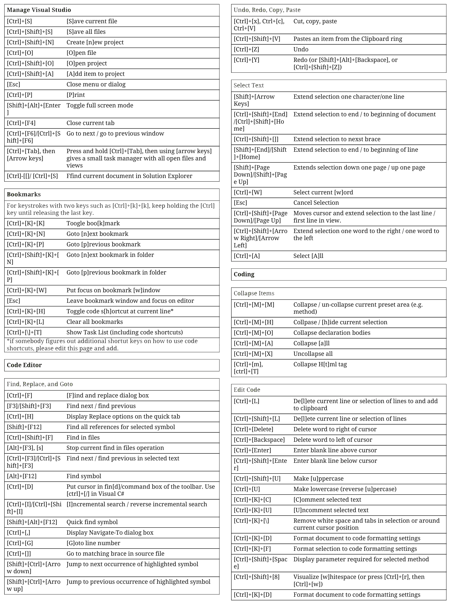
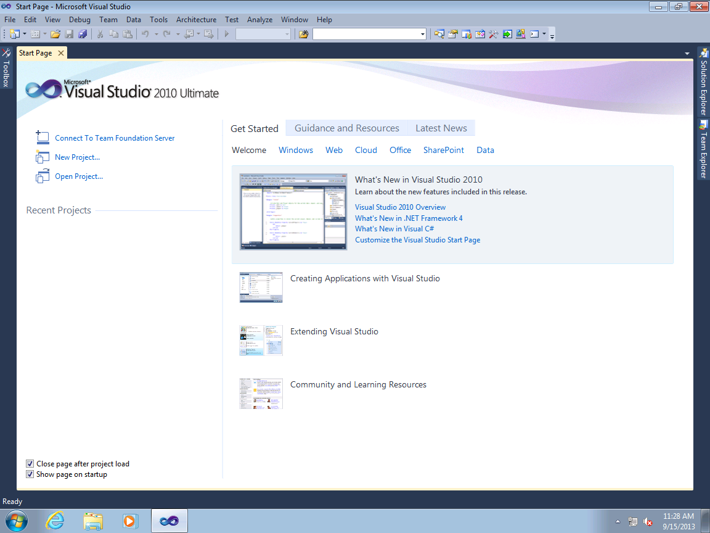
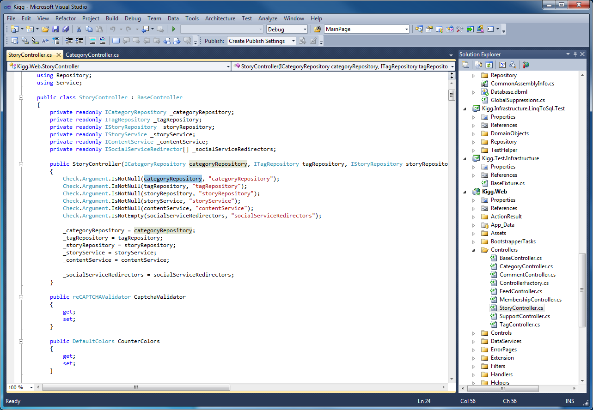

History
Microsoft first released Visual Studio (codenamed Boston,[63] for the city of the same name, thus beginning the VS codenames related to places)[63]
in 1997, bundling many of its programming tools together for the first time. Visual Studio 97 came in two editions: Visual Studio Professional and Visual Studio
Enterprise, the professional edition has three CDs, and the enterprise on four CDs. It included Visual J++ 1.1 for Java programming and introduced Visual InterDev
for creating dynamically generated web sites using Active Server Pages.[citation needed] There was a single companion CD that contained the Microsoft Developer Network library.
Shortcuts

Strengths and Weaknesses
- Pros
- Improved user accessibility from previous versions
- Improved start page from previous versions
- Plugins are still updated
- Cons
- Requires entire team to be using this version
- Only designed for Windows

Specs
- IDE: Visual Studio 2010
- Versions: 2010 Professional, 2010 Premium, 2010 Ultimate, Test Professsional 2010
- Supported OS: Windows 2003 Server, Windows XP, Windows Vista, Windows 7

Plugins
| Name |
Description |
Last Update |
Downloads |
| Visual Studio Color Theme Editor |
Allows users to customize the color palette used for menus, toolbars, tabs, title bars, and other environment colors. |
8/20/2010 |
505,316 |
| Devart T4 Editor for Visual Studio |
Adds in features for editing T4 templates with syntax highlighting, intellisense, code outlining, and all features of first-class text editor add-in for Visual Studio. |
3/10/2016 |
38,033 |
| Tabs Studio |
Allows for organizing and grouping tabs easier to allow for easier use when using many tabs. |
5/10/2016 |
21,769 |